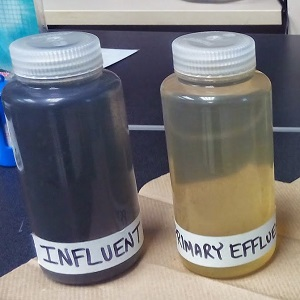

Math Class Grades
The University of North Carolina math department is noted for “giving out” low grades. To examine this, the GPA from a random sample of 22 math classes and 29 “other” university classes (from the last year) was collected and recorded in UNCGrades.csv. Use these data to answer the following questions.
- Separately, perform an appropriate EDA for each type of class. Refer to figures and tables as appropriate. [HINT: You may construct a figure for each type of class with just one R command. One command may also be used to construct a table that contains results for each class type.]
- What two MAJOR conclusions might you make about differences in GPA between the two class types based on your observations above. [HINT: Focus on EDA characteristics that you described in your answer to the previous question.]
Effluent Sampling Labs

Municipal wastewater treatment plants are required by law to monitor their discharges into rivers and streams on a regular basis. Concern about the reliability of data from one of these self-monitoring programs led to a study in which samples of effluent were divided and sent to two labs – a State of Wisconsin lab and a private commercial lab. Each lab measured the Biological Oxygen Demand (BOD) on the effluent sample sent to them. Enter these data (in stacked format with two columns labeled lab and bod) into a CSV file and read into an object named df in R.
State -- 6,6,8,11,18,20,28,33,34,43,71
Private -- 15,25,28,29,34,35,36,39,42,44,54
- Perform separate appropriate EDAs for each lab. Refer to figures and tables as appropriate. [HINT: You may construct a figure for each lab with just one R command. One command may also be used to construct a table that contains results for each lab.]
- Comment on two MAJOR differences in the results from the two labs?
Cafe Sales
 DePaolo and Robinson (2011) reported on data collected from a cafe run by business students at Indiana State University. The cafe was begun because a commercial vendor had closed a similar business. The group of business students opened a replacement business and carefully monitored sales and costs over a ten-week period during the spring semester of 2010. The students recorded extensive data in CafeData.csv (data, meta). Load these data into R, refactor the day of the week variable to be in proper order (see this FAQ), and answer the questions below.
DePaolo and Robinson (2011) reported on data collected from a cafe run by business students at Indiana State University. The cafe was begun because a commercial vendor had closed a similar business. The group of business students opened a replacement business and carefully monitored sales and costs over a ten-week period during the spring semester of 2010. The students recorded extensive data in CafeData.csv (data, meta). Load these data into R, refactor the day of the week variable to be in proper order (see this FAQ), and answer the questions below.
- Perform a univariate EDA for the number of coffees sold.
- Examine the effect of day of the week on the distribution of number of coffees sold.
- Perform a univariate EDA for the number of sodas sold.
- Examine the effect of day of the week on the distribution of number of sodas sold.
- Construct a “take home message” from your analyses.